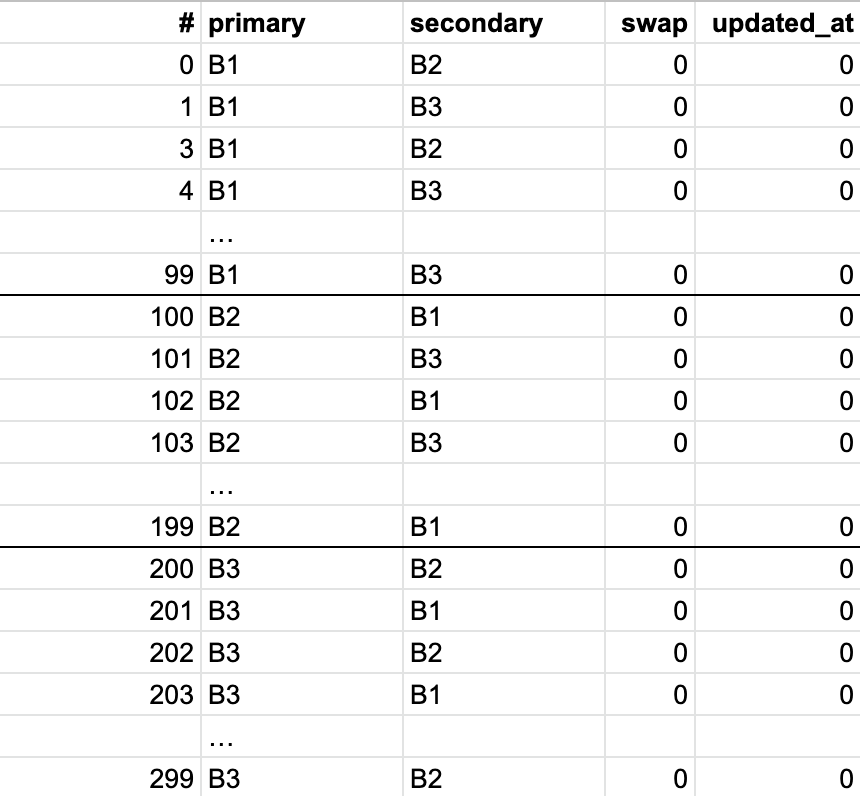

#1225 基于静态策略的转发表生成和更新方法¶
本方法是在 cf 文章里提到的 LRM 策略 + 交换 primary、secondary 这两个方法基础上演绎而来。
转发表的变更步骤如下：
检查后端配置/状态是否有变更，如果有，更新基础表（以下简称基表）。
根据后端的状态以及 load 微调基表（交换某些槽位的 primary 和 secondary）生成最终的转发表。
基表具有以下特性：
primary 中各个后端数量基本均衡。因为 primary 是主要负担流量的机器
primary 中每个后端对应的 secondary 集合中各种后端数目均衡。防止微调 load 后承接流量的 secondary 分布均衡。
每个槽位 primary 和 secondary 中至少有一台后端是健康的。保证服务高可用。
微调程序主要做两件事：
对于 load 太高的后端的交换一定比例槽位的 primary 和 secondary。
对于 primary 不健康的槽位，交换他们的 primary 和 secondary。
基表能不变更就不变更，尽量通过微调交换 primary 和 secondary 的方式来更新转发表，这样可以尽可能的维持长连接。
微调程序逻辑简单就不说了，下面主要说下基表的生成过程。
我们以 3 个后端，3 * 100 个转发表槽位为例（转发表一般大小 >= 边缘机房的最大机器数目 * 100 且是 2 的幂，这里为了描述方便简化了）。
首先，初始化基表，直接双重 for 循环轮替就行。初始化后的基表如下图所示：
{kind=link}
更新表中某个槽位的方式为：将新的后端放到 primary 中。将原来的 primary 放到 secondary 中，并修改其 updated_at 为当时的时间戳。
更新策略：
首先，添加新的后端。比如新加一台服务器 B4，此时 primary 中已经有的 B1、B2、B3 需要各自匀出 25 个槽位给 B4，这样 primary 中各种后端的数目才一样，每个后端在挑选自己要匀出来的 25 个槽位时，选择 updated_at 时间最小的 25 个。
第二，删除后端，比如删除后端 B1，首先我们找到所有 primary 为 B1 的槽位，当前有 75 个删除槽位，一共 B2、B3、B4 3 个其它后端，那么每个后端获得 75/3 = 25 个名额，我们按照 updated_at 从大到小的顺序依次更新这些槽位，每个槽位更新的时候优先选择其 secondary 中的后端，同时将该后端的名额减 1，如果减到 0，那么该位置暂时留空，一遍循环后再使用还有名额的后端更新留空的位置。如果使用的是 secondary 替代，不修改该槽位的 updated_at。此时，B1 只是换到了 secondary 中，graceful draining 一段时间后再更新 secondary 中的 B1 为其它机器（仍需满足上面基表特性 2 的约束）。
第三，对于挂一台机器，不变更。对于挂 2 台或以上机器，同删除后端，但是只选取那些 primary 和 secondary 都挂的条目更新。